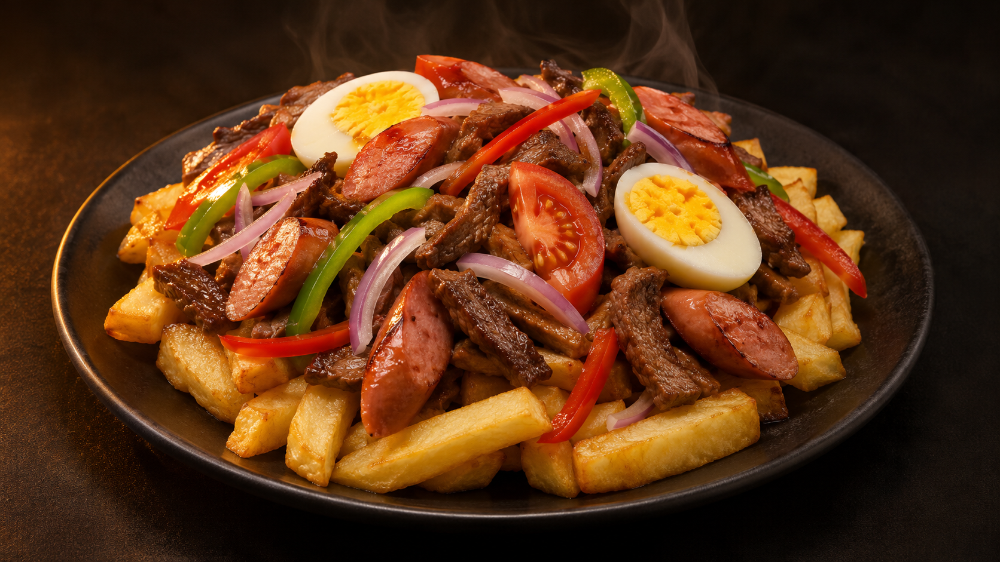

BOLIVIA EN LA MESA. BIZKAIA EN EL MAPA.
De Bolivia.
Con fuego.
Con alma.
Hay sabores que cruzan un océano.
Y te hacen sentir en casa al primer bocado.
Asador Sensación · Cocina boliviana.

A TU MESA.
NUEVE DEPARTAMENTOS. INFINITAS FORMAS DE SENTIR.
Las raíces
no se olvidan.
Se saborean.
El desayuno con api y llaucha. El pique que se comparte. El cuñapé recién hecho. Hay recuerdos que vuelven con el primer bocado.
Del altiplano a los valles y las tierras bajas: muchas historias, muchas cocinas, un país que se lleva dentro.
Recorre nuestros sabores ↘01 / NUESTRA ESENCIA
Un viaje de ida.
Y mil formas de volver.
Una salteña caliente. Un poco de llajua. Y ese sabor que nos lleva de vuelta.
Bolivia tiene muchas cocinas: las sopas que abrigan en el altiplano, los platos generosos de los valles y los sabores del oriente. Queremos que esa diversidad se encuentre en nuestra mesa, también aquí, en Bizkaia.
Encuentra tu favorito ↘UN PAÍS, MUCHAS COCINAS
Tres paisajes.
La misma alma.
Un recorrido por sabores asociados a cada región.
Las recetas viajan y cambian de una casa a otra.
LA PAZ · ORURO · POTOSÍ
Sabores que abrigan.
Llauchas al empezar el día, chairo y fricasé para entrar en calor. Una invitación a conocer la cocina de altura.
02 / LA CARTA
Esto no se cuenta.
Se prueba.
Del primer bocado a la última cucharada.
Explora nuestra propuesta boliviana.
Precios orientativos · fotos ilustrativas con IA.
No encontramos ese sabor.
Prueba otro nombre o cambia de categoría.
Puedes completar una compra ficticia con tarjeta, Apple Pay o Google Pay simulados. No se cobra ni se envía un pedido. Ingredientes, raciones, alérgenos y disponibilidad deben confirmarse con el restaurante.
DE LOS QUE INVITAN A REPETIR
El último toque.
La primera sensación.
Nos vemos a la mesa ↗04 / TU PRÓXIMO ENCUENTRO
Tu gente.
Tu mesa.
Tu momento.
Elige tu fecha y dinos cuántos venís.
La mesa queda pendiente hasta que el restaurante confirme disponibilidad.
05 / NOS VEMOS AQUÍ
Nos vemos
en Sensación.
Amaia Kalea, 2
48940, Bizkaia
Para disfrutar en el local o para llevar.
Sin reparto a domicilio. Horarios por confirmar.